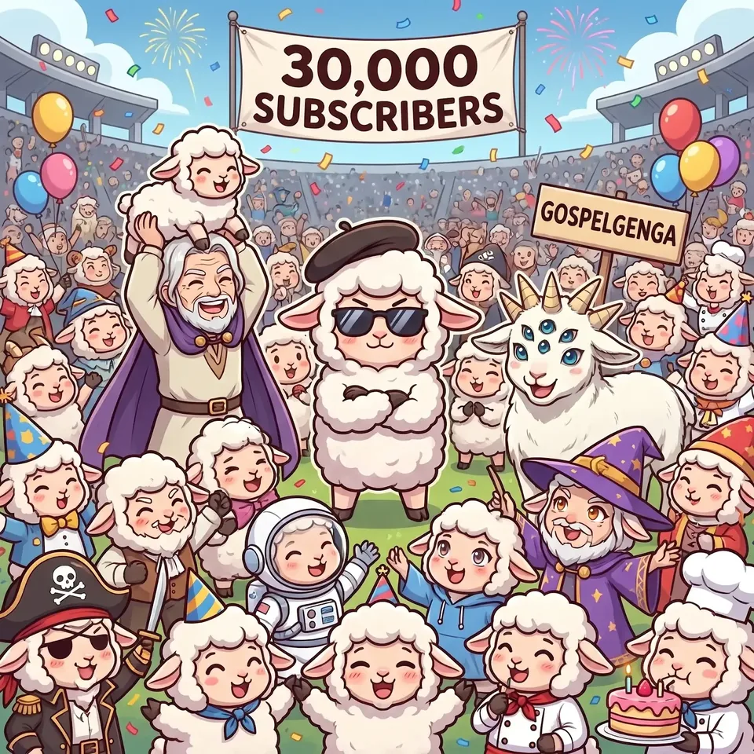
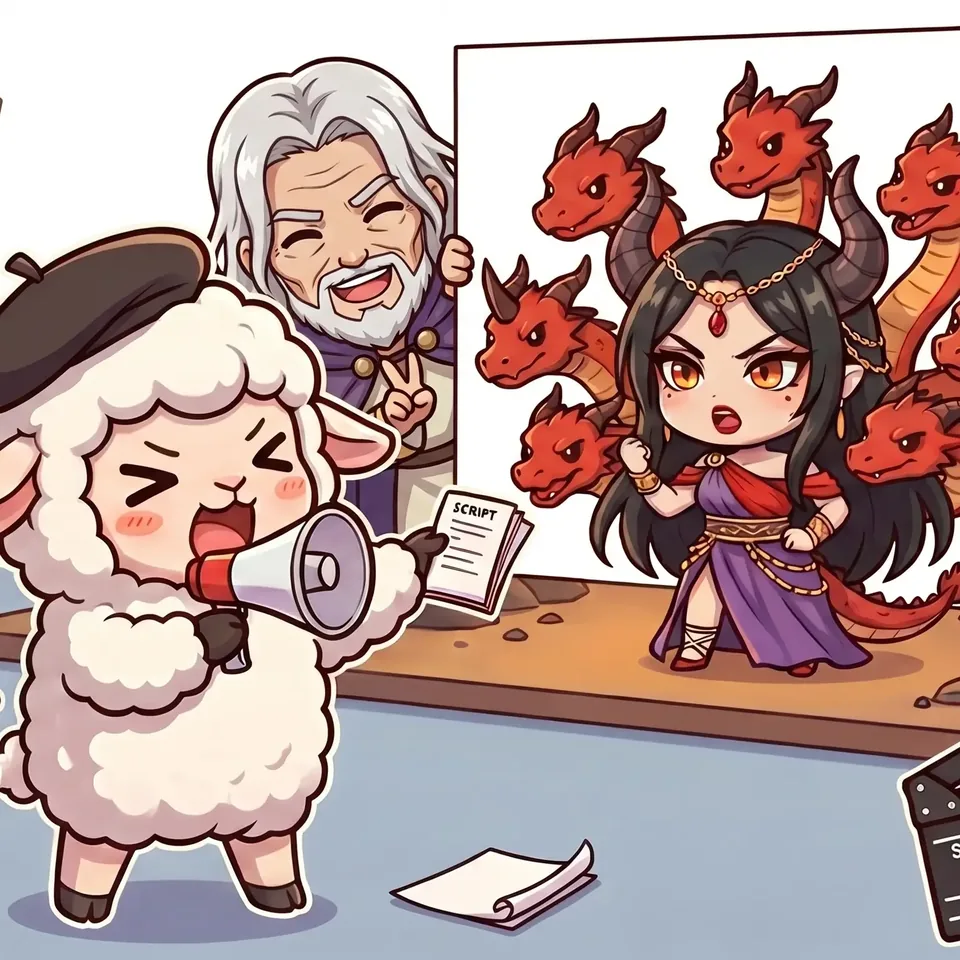

Christian anime · Faithful to Scripture
Scripture brought to life, chapter by chapter, from Genesis to Revelation.
The mission 原画
The Bible has 1,189 chapters, and we are animating every one of them, one faithful episode at a time.
Our name comes from anime itself. In a Japanese studio, genga (原画) are the key drawings: the frames an animator draws first, holding the moments a scene turns on. That is how we read Scripture. We find the key moments of each chapter and draw them out in anime, a medium made for scale and feeling, for prophets' visions, the courts of heaven and a fourth man walking in the fire.
Scripture is the source of truth, and nothing replaces reading it for yourself. The episodes are a companion to the text: they show the places, the people and the history behind each chapter, so you return to the page with more context than before.
AI is a tool in our hands, not the author. Every episode is built from the Berean Standard Bible and checked against it, and the tool lets a small, independent studio make what once cost large studios millions, so the whole Bible can be animated, not only its best-known stories.
Updated after every new episode.
Select a book to see its chapters and watch them.
Complete In progress Still to come
Watch
Genesis, chapter by chapter, starting with Creation.
Watch Genesis 1 02The Book of Revelation, start to finish, as a feature-length movie.
See the movie 03Daniel in Babylon: the furnace, the writing on the wall, the visions.
Watch Daniel 1A whole book in one sitting. Grab a coffee.


The flock
Behind every episode is Lambrandt, a small lamb in a beret with a megaphone and a script, named after Rembrandt, who painted the Bible's stories all his life. Lambrandt runs the set on our YouTube community posts and on Instagram, and the flock is you.
Support
GospelGenga is independent and funded by viewers. Your support pays for the animation, voices and music behind each new chapter.
Prefer Ko-fi's own page? ko-fi.com/gospelgenga
Or support every month
Monthly support on Patreon. Patrons at our top tier, the Paladins, are thanked by name at the end of every episode.
Join on PatreonWatching, subscribing and sharing an episode with a friend helps just as much.
Subscribe on YouTubePartners
We work with brands, ministries and creators who serve a faith-based audience: sponsored segments in new episodes and full movies, collaborations, and projects that bring Scripture to more people.
We only partner with brands that suit a family, faith-based audience.
YouTube figures, updated with each new episode.
Questions
Narration quotes the Berean Standard Bible (BSB), a modern translation in the public domain. Each script is checked against the BSB text before it is animated. Where we add historical or cultural background, we present it as background, not as Scripture.
No. Scripture is the source of truth. The episodes are a visual aid that adds context, and we hope each one sends you back to the chapter itself.
Yes, as a tool. AI helps us produce the animation and voices, which lets a small studio make films that used to need a large team and a large budget. We choose the stories, direct each episode and check its narration against the Berean Standard Bible.
Start with Genesis 1 for the story from the beginning, or watch a full Revelation movie in one sitting. Every book we have animated is listed in the chapter tracker.
Watch, subscribe and share an episode with someone. If you would like to fund the next chapter, you can give once or become a patron.
Use Contact us in the Partners section. Tell us who you are and what you have in mind.
Shop
Apparel and prints from the series are on the way. Subscribe on YouTube to hear the moment the store opens.
Get notified on YouTube